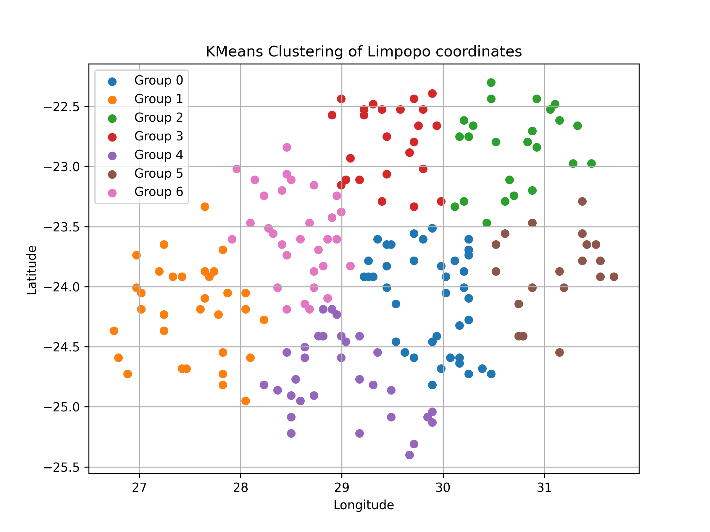
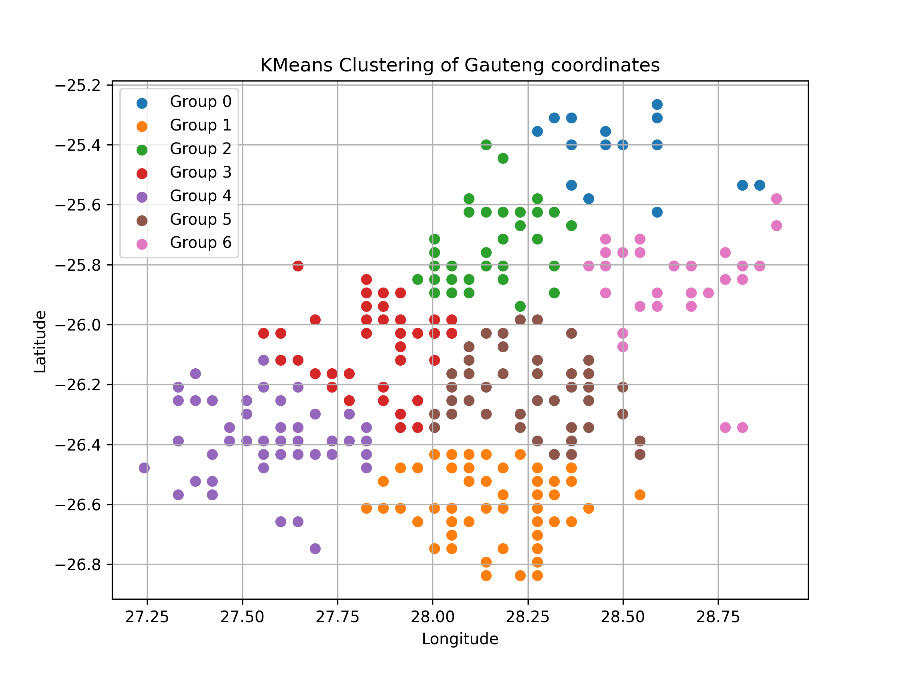
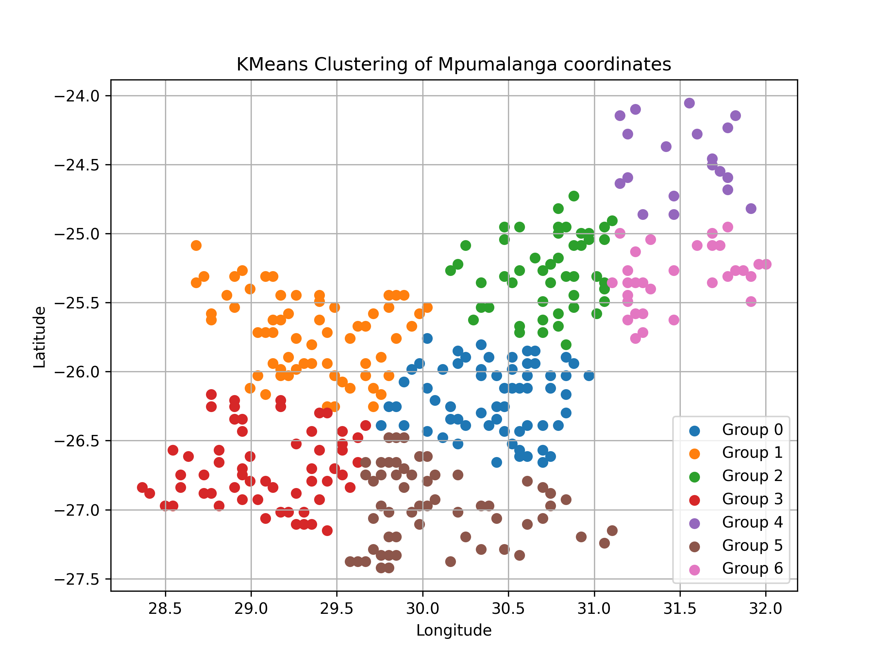
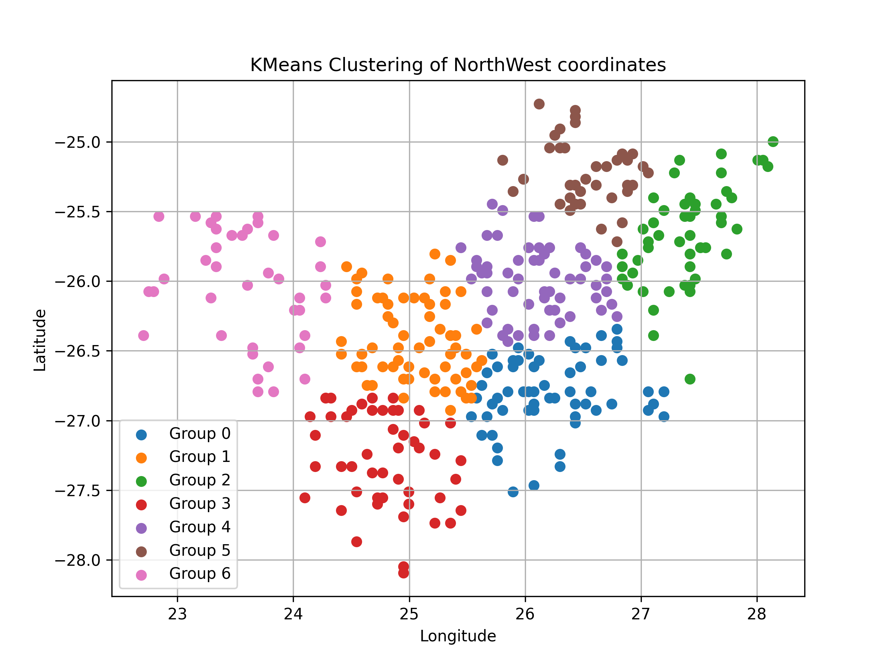

X CHIRPS Rainfall Dataset
Rainfall was incorporated into the cattle price forecasting model as an exogenous variable to capture the
influence of climatic conditions on livestock production. The rainfall data were obtained from the Climate
Hazards Group InfraRed Precipitation with Station data (CHIRPS) dataset, which is available through Google
Earth Engine (GEE).
CHIRPS is a high-resolution quasi-global rainfall product developed by the Climate Hazards Center (CHC) at
the University of California, Santa Barbara (UCSB). The dataset combines satellite-derived infrared precipitation
estimates with observations from thousands of ground-based weather stations to produce accurate gridded rainfall
estimates. By blending satellite imagery with station measurements, CHIRPS provides improved spatial coverage in
regions where weather station networks are sparse while maintaining consistency with observed rainfall measurements.
The CHIRPS Version 2.0 dataset provides:
- Characteristic Description
- Producer Climate Hazards Center (CHC), UCSB
- Spatial resolution 0.05° (~5 km)
- Temporal coverage 1981 – Present
- Temporal resolution Daily, Pentadal (5-day), and Monthly
- Coverage Quasi-global (50°S–50°N for v2 products)
- Rainfall units Millimetres (mm)
The relatively fine spatial resolution and long historical record make CHIRPS particularly suitable for agricultural,
hydrological, drought monitoring, and climate-related studies where consistent rainfall observations are required.
Google Earth Engine
Google Earth Engine is a cloud-based geospatial processing platform that provides access to a large catalogue of
remotely sensed datasets together with high-performance computational resources. Instead of downloading large raster
datasets locally, Earth Engine allows users to perform spatial and temporal analyses directly on Google's cloud
infrastructure before exporting only the processed results.
For this study, Earth Engine was used because it:
- hosts the complete CHIRPS rainfall archive;
- performs filtering and processing on Google's servers;
- efficiently processes multiple years of rainfall observations;
- enables automated extraction over multiple regions simultaneously; and
- exports processed datasets directly as CSV files.
Using GEE significantly reduced both storage requirements and computational time compared with downloading and
processing thousands of individual raster files locally.
Rainfall Data Extraction Methodology
Rainfall data were extracted dynamically from Google Earth Engine using a custom JavaScript script developed for this
study. Rather than downloading rainfall rasters manually, the script automated the entire extraction process. The extraction
procedure consisted of the following steps:
Step 1: Define study areas
The four South African provinces included in the analysis (Limpopo, Mpumalanga, Gauteng and North West) were imported
into Google Earth Engine as polygon shapefiles defining the regions of interest.
Step 2: Generate sampling locations
For each province, random sampling points were generated across the study area. These points represented locations
at which rainfall values would be extracted throughout the study period. Random spatial sampling ensured that rainfall
variability across each province was adequately represented while maintaining manageable computational requirements. There
were 200 random sampling points chosen. Shown in the image below:




Step 3: Load the CHIRPS rainfall collection
The CHIRPS ImageCollection was loaded into Google Earth Engine and filtered according to the required study period
(2020–2025). Only the precipitation band was retained for subsequent processing.
Step 4: Extract rainfall values
For each rainfall image:
- rainfall was sampled at every random point,
- the rainfall amount (mm) was recorded,
- the image acquisition date was attached to every observation,
- province and sampling-point identifiers were retained.
This produced a continuous rainfall time series for every sampled location.
Step 5: Aggregate rainfall observations
Individual point observations were subsequently aggregated according to the predefined rainfall clusters
(KNN groups). Average rainfall was calculated for each cluster and week, producing representative rainfall
measurements that aligned with the temporal structure of the livestock price dataset.
Step 6: Export results
The processed rainfall tables were exported directly from Google Earth Engine as CSV files. Each exported record
contained information such as:
- Province
- KNN rainfall region
- Year
- Week
- Date
- Average rainfall (mm)
These CSV files were subsequently imported into Python, where they were merged with the weekly cattle price data
and transformed into additional explanatory variables, including one-year and two-year rainfall lag variables used
in the forecasting models.